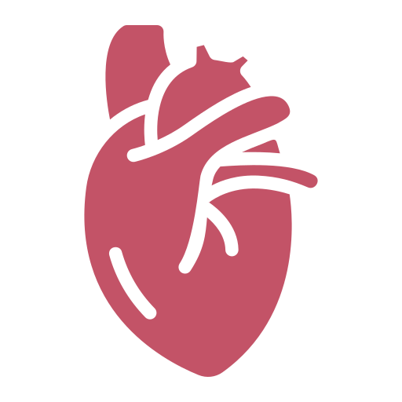
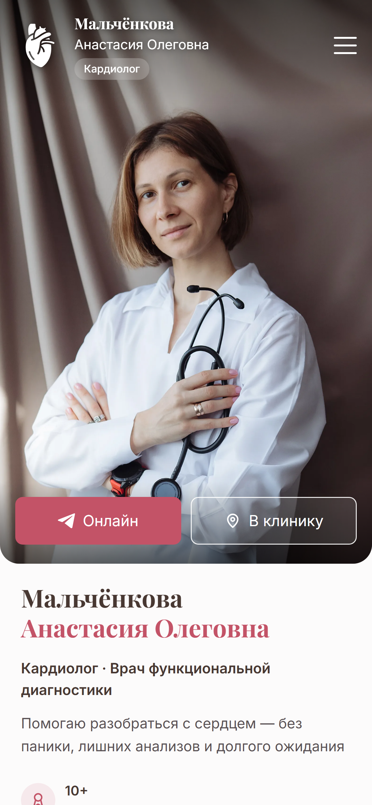
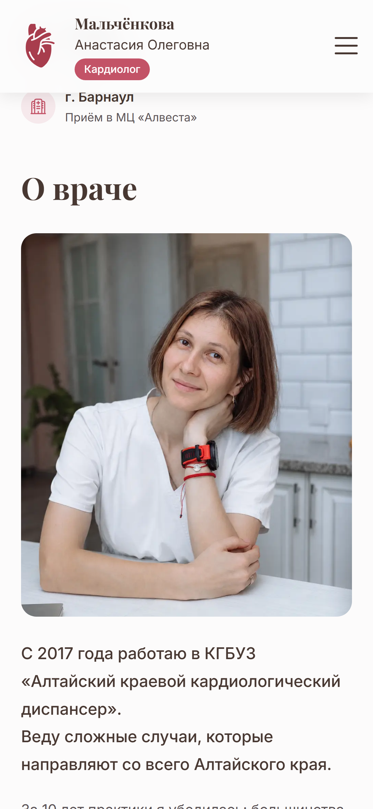
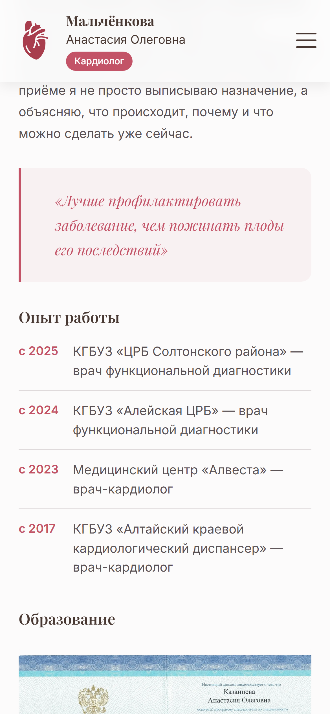
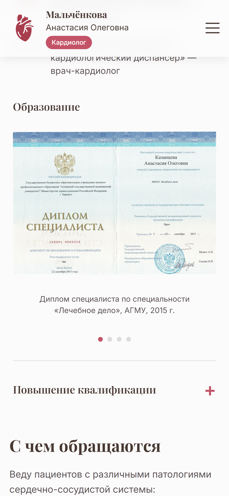
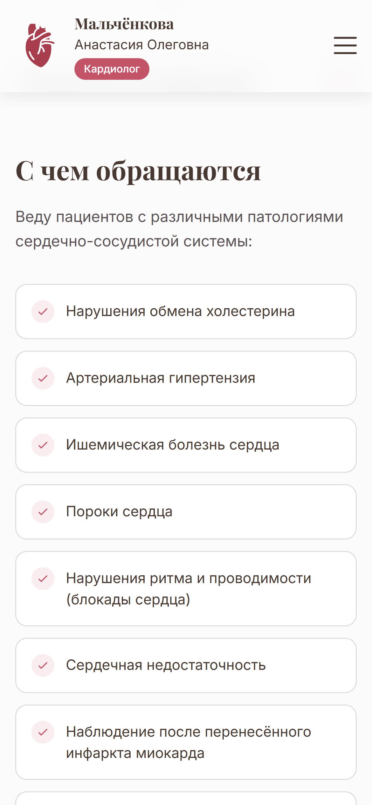
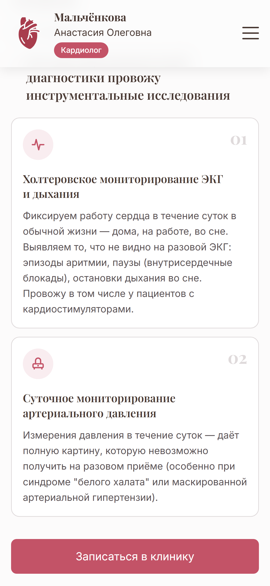
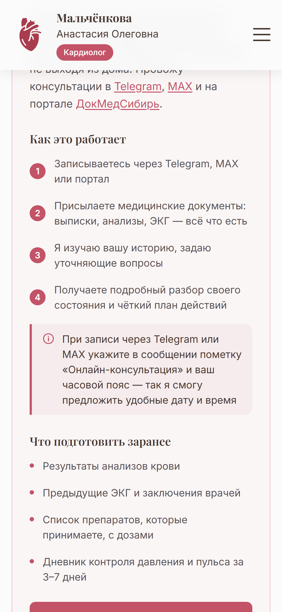
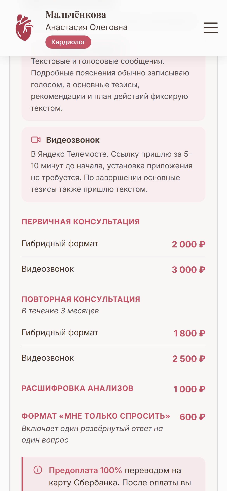
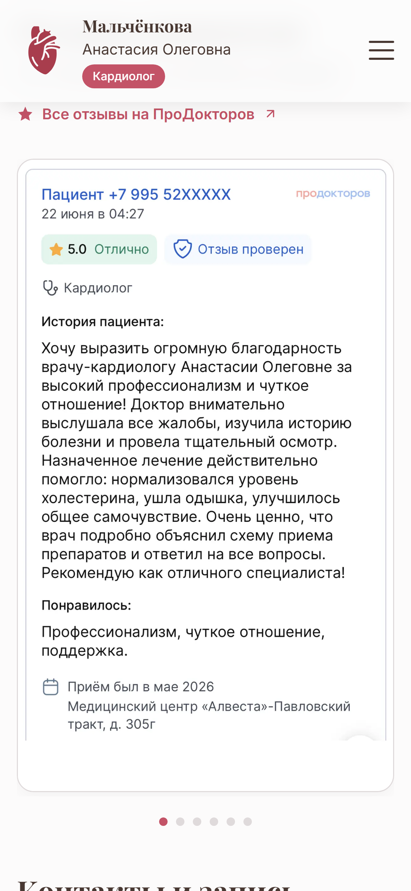

01
Всё главное — в одном месте
В соцсетях информация тонет в ленте. На сайте пациент за пару минут находит всё, что нужно для записи:
О врачеС чем обращаютсяУслугиЗаписьСтоимостьОтзывыКонтакты


Покажу на примере сайта
для врача-кардиолога
В соцсетях информация тонет в ленте. На сайте пациент за пару минут находит всё, что нужно для записи:

Опыт работы, дипломы и курсы повышения квалификации — проверяемые факты, а не строчка в шапке профиля.


Список состояний, с которыми работает врач. Человек узнаёт свою ситуацию — и записывается увереннее.

Что такое Холтер и СМАД, зачем они нужны и что покажут. Без медицинского жаргона — так, чтобы понял любой пациент.

Как проходит онлайн-консультация и что подготовить заранее — пациент читает это до записи и приходит готовым.

Пациент заранее видит стоимость и сам выбирает формат. Никаких «цена в директ» — и меньше ушедших после этого вопроса.

Реальные отзывы с независимой площадки — прямо на сайте и со ссылкой на источник.

Приём в клинике и онлайн-консультации. ЭКГ, Холтер, суточное мониторирование давления. Опыт более 10 лет.
Хотите такой же сайт для своей практики? Напишите САЙТ в директ — расскажу, как он будет работать именно для вас.